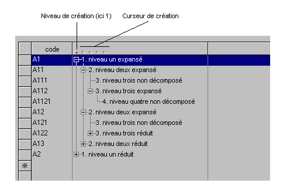
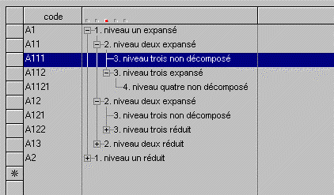

Un arbre est un tableau particulier dont les éléments présentent une structure hiérarchisée arborescente (à la manière de l'explorateur ou des aides Windows).
Comme un arbre est d'abord un tableau, sachez que la plupart des fonctionnalités des objets tableau (caractéristiques générales, structure en liste, traitements, fonctions de gestion, etc.) s'appliquent aussi aux arbres : dans ce chapitre, nous ne reviendrons donc pas sur les aspects purement tableau des arbres (on se reportera au besoin au chapitre consacré aux Tableaux) mais nous nous attacherons uniquement à décrire leurs propriétés spécifiques.
Déclaration d'un arbre dans Xwin
Dans le masque Xwin, la déclaration d'un arbre nécessite la création préalable d'un tableau. Pour que le tableau soit ensuite considéré comme un arbre, il suffit d'y placer une donnée structurée de type " Objet arbre ", donnée que nous nommerons par la suite Variable de contrôle de l'arbre (pour plus de détails, voir la rubrique Variable de contrôle d'un arbre).
Terminologie
Dans la suite de ce chapitre :
Nous appellerons niveau la position d'un élément d'arbre dans la hiérarchie : les éléments de niveau 1 sont à la base de l'arbre ; ils peuvent se décomposer en éléments de niveau 2, qui eux-mêmes peuvent se décomposer en éléments de niveau 3, et ainsi de suite.
Nous dirons que les éléments d'une même branche de niveaux N+1, N+2, etc. sont les sous-niveaux de l'élément racine de niveau N.
C'est à votre programme de décider si, à un instant donné, Ywpf doit ou ne doit pas afficher à l'écran les sous-niveaux d'un élément quelconque.
Lorsque ses sous-niveaux ne sont pas affichés, on dira que l'élément est réduit et nous nommerons expansion l'opération consistant à "ouvrir" l'élément pour faire apparaître ses sous-niveau.
A l'inverse, lorsque ses sous-niveaux sont affichés, on dira que l'élément est expansé et nous nommerons réduction l'opération consistant à "refermer" l'élément pour ne plus faire apparaître ses sous-niveaux.
Remarque : A l'écran, le signe + (respectivement –) est affiché en regard d'un élément réduit (respectivement expansé). L'utilisateur peut normalement cliquer sur le + (respectivement sur le –) pour demander son expansion (respectivement sa réduction).
Avant de demander la création d'un nouvel élément, l'utilisateur doit choisir son niveau en positionnant un curseur, nommé curseur de création et situé dans l'en-tête de la colonne affichant l'arborescence (voir schéma). Le niveau à affecter à un élément nouvellement créé sera appelé niveau de création.

Avant de détailler les diverses composantes et fonctions de gestion des objets arbre, passons en revue les traitements qui leur sont généralement associés.
